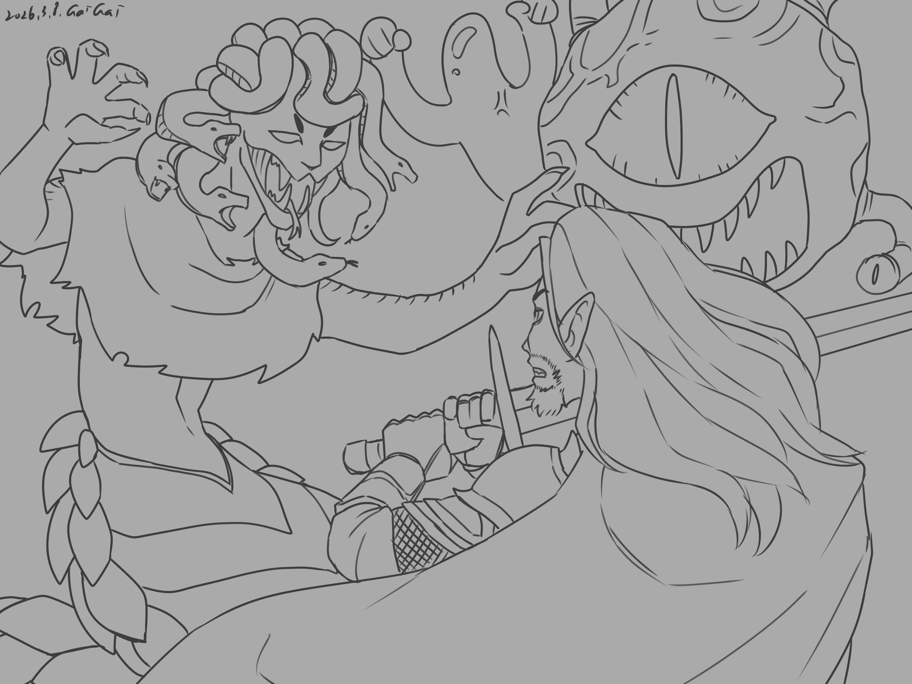

Chapter 3: Forces of the Serpent
Py'Par's Vision


Py'Par's Vision
15051.10.19
羅特讓佛拉靠在樹邊休息。巴斯和烏波的心情很換亂，但也有共識現在不是吵架的時候。而在一旁不知所措的派琶，一方面想幫忙，但又對這群人不夠熟悉。他不清楚這樣的狀況到底該怎麼辦。待休息的差不多，大家便啟程，繼續朝常翠林的根據地前進了。
派琶走在前頭，羅特背著疲憊的佛拉跟在後面。他不能再失去夥伴了。巴斯和烏波走在最後，他們對芬尼爾的信仰有一番激烈的討論。巴斯好奇道，同樣是芬尼爾的信仰者，佛拉以及襲擊他們的其他信徒們，對烏波來說卻是敵人。他很好奇對烏波來說，這是什麼意義？烏波堅定的認為芬尼爾的信徒都是對的，這些攻擊他們的家伙，只是走歪了而已。對此，巴斯陷入了沈思。
花田在派琶腳下開了又謝，冒險者們離開樹林了一陣子，走在空曠的泥土地上。前方又是一片樹林，派琶堅定地領著大家前進。
樹林邊緣，再次出現一批新的人。烏波一看，又是芬尼爾的信徒了。他與上次相同，熱切地和他們打了招呼。羅特想把佛拉藏好，卻發現周圍太過空曠，沒有遮掩。他只好將佛拉先原地放下，讓大家往前。稍微拉開一點距離，至少能讓佛拉遠離戰場。有鑒於上次突發的戰鬥，大家這次都謹慎多了，武器握在手上，以備不時之需。然而，上次戰鬥後，眾人只做了很短暫的休息，因此大家還是十分擔心。
兩名芬尼爾信徒先出現在大家的眼前。他們揮舞著長劍，衝了上來。冒險者們擋在前面，巴斯與烏波奮勇抗敵，派琶在後方支援，羅特則躲在派琶後方，試圖製造偷襲的機會。
然而，在劍士身後跟來的卻不是等閒之輩。一名大約他們兩倍身高的妖怪現身。他有著蛇般捲曲的身軀，頭上除了頭冠外，還有幾條嘶叫的蛇，尖銳的爪子讓人感到不寒而慄。蛇身女妖一出場，便朝著派琶使咒。在那之後，還有一名弓箭手和一名法師加入戰鬥，冒險者們打得十分艱辛。
縱使每一擊都用力打中，巴斯的攻擊對蛇身女妖卻像是毫無作用一般。除了派琶外，蛇身女妖也將他的蛇尾纏繞在巴斯身上，嘗試限制他的行動。另一方面，烏波化身成了眼魔，試圖有些額外的輸出，卻也在短時間內被蛇身女妖打回原型。在派琶的支援下，冒險者們雖然難以擊退蛇身女妖與芬尼爾信徒，暫時沒有太立即的危險。
蛇身女妖不戀棧，他在一次朝派琶施法，接著，他滿意的笑了。「撤退。」他說道，接著便一路往回走。四名跟隨的小兵中，一名被施法魅惑，另一名則被烏波用力抓住。其餘小兵趕緊跟著蛇身女妖撤退，被魅惑的小兵也晃著晃著跑走了。
冒險者們不太了解到底發生了什麼事情？蛇身女妖怎麼突然就撤退了。派琶慌亂的表情轉而凝重。「我們得趕路了。」他說道。冒險者嘗試從唯一抓住的小兵身上問話。這次的來襲者們不像上次那樣戴著面具，但他們也發現他的嘴被線縫死。割開了線，一段壞死的舌頭掉了出來，士兵只能咿咿呀呀地說著聽不懂的話。
羅特嘗試透過心靈溝通問出點什麼，卻發現當他嘗試詢問這是否與「芒果」有關時，士兵不自然地毫無回應，就像這早已被設計好洗空了一樣。羅特很清楚知道答案，而這令他很生氣。
「這一代有常翠林的中繼站。我們得先趕過去。」派琶堅定地看著遠方。「你們的金髮朋友可能有危險了，快出發吧。」
路上，巴斯繼續與烏波談話。他問起烏波是否有看過一個「翠綠色蝴蝶」的家徽。烏波仔細想。這個符號在他腦中曾存在過，但不是屬於他的記憶。他知道，這是他當時被製造出來時，被灌進去的記憶。一名貴族穿著的中年妖精男子，將這枚「翠綠色的蝴蝶」遞給一名差不多年紀的妖精女子。
烏波和巴斯說明了他所知道的細節，讓巴斯十分訝異。巴斯想詢問更多細節，但這是烏波能想到的最完整的片段了。巴斯的心情開始有些躁動。
15051.10.19
Lott let Phola rest against the tree. Buzz and Ubbo are in very different moods, but they also agree that now is not the time to quarrel. Py'Par, who was at a loss on the side, wanted to help, but was not familiar with this group of people. He didn't know what to do in this situation. When it was almost time to rest, everyone set off and continued towards Chang Cuilin's base.
Py'Par walked in front, and Lott followed behind, carrying the tired Phola. He couldn't afford to lose his partner again. Buzz and Ubbo came last, and they had a heated discussion about Phynoir's belief. Buzz wondered, Phola was also a believer in Phynoir, and the other believers who attacked them were enemies to Ubbo. He was curious about what this meant to Ubbo? Ubbo firmly believes that the followers of Phynoir are right, and these guys who attack them are just going astray. In this regard, Buzz fell into deep thought.
The flower field bloomed and faded at the feet of Py'Par. The adventurers left the woods for a while and walked on the open dirt. There is another forest ahead, and Py'Par leads everyone forward firmly.
At the edge of the woods, a new group of people appeared again. At first glance, Ubbo is a believer in Phynoir again. Like last time, he greeted them eagerly. Lott wanted to hide Phola, but found that the surrounding area was too empty and there was no cover. He had no choice but to put Phola down on the spot and let everyone move forward. A little distance can at least keep Phola away from the battlefield. In view of the sudden battle last time, everyone was much more cautious this time, holding weapons in hand in case of emergency. However, everyone only took a short rest after the last battle, so everyone was still very worried.
Two Phynoir believers appeared in front of everyone first. They brandished their swords and charged forward. The adventurers stood in the front, Buzz and Ubbo fought bravely against the enemy, Py'Par supported from the rear, and Lott hid behind Py'Par, trying to create an opportunity for a sneak attack.
However, what followed behind the swordsman was no ordinary person. A monster about twice their height appeared. He has a snake-like curled body, and in addition to his crown, there are several hissing snakes on his head, and his sharp claws make people shudder. As soon as the gorgon appeared, she cast a spell on Py'Par. After that, an archer and a mage joined the battle, and the adventurers fought very hard.
Even though every blow hit hard, Buzz's attacks seemed to have no effect on the gorgon. In addition to Py'Par, the gorgon also wrapped his snake tail around Buzz, trying to restrict his movements. On the other hand, Ubbo transformed into a beholder and tried to provide some additional output, but was beaten back to its original form by the Banshee in a short period of time. With the support of Py'Par, although the adventurers were unable to repel the gorgon and Phynoir believers, there was no immediate danger for the time being.
The snake-shaped banshee was not in love. He once cast a spell on Py'Par, and then he smiled with satisfaction. "Retreat," he said, and walked back. Among the four soldiers who followed, one was charmed by a spell, and the other was grabbed by Ubbo. The other soldiers quickly followed the Gorgon and retreated, and the charmed soldiers also swayed away.
The adventurers don’t quite understand what happened? Why did the gorgon retreat suddenly? Py'Par's panicked expression turned solemn. "We have to get on our way," he said. The adventurer tried to ask questions from the only soldier caught. This time the attackers were not wearing masks like last time, but they also found that his mouth was sewn shut with stitches. After the thread was cut, a section of the necrotic tongue fell out, and the soldier could only babble and speak incomprehensible words.
Lott tried to ask something through spiritual communication, but found that when he tried to ask if this was related to "Mango", the soldier unnaturally gave no response, as if it had been designed to be cleared up. Lott knew the answer, and it pissed him off.
"This generation has Chang Cuilin's relay station. We have to rush there first." Py'Par looked firmly into the distance. "Your blond friend may be in danger, let's go quickly."
On the way, Buzz continued to talk to Ubbo. He asked Ubbo if he had ever seen the family crest of an "emerald green butterfly". Ubbo think carefully. This symbol had existed in his mind, but it was not his memory. He knew that this was the memory that was poured into him when he was created. A middle-aged elf man dressed as a nobleman handed this "emerald green butterfly" to an elf woman of about the same age.
Ubbo and Buzz explained the details he knew, which surprised Buzz. Buzz wanted to ask for more details, but this is the most complete snippet Ubbo could come up with. Buzz started to feel a little restless.